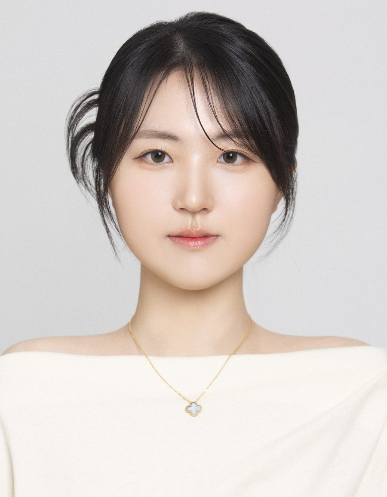

Hi, I'm
Mingyeom Song
Technical Designer · Unity / C#
I build gameplay systems and Unity Inspector tools that let designers and artists work without code.

About Me
I'm a Technical Designer based in Vancouver, BC. I studied art and design at Kyung Hee University and game design at Vancouver Film School, and I code in Unity C#.
Because I understand art, design, and programming, I like being the person who connects them: turning design ideas into working systems, and building tools so my teammates can work without waiting for a programmer.
Gameplay SystemsAI states, interactions, respawn, core mechanics
Designer ToolsUnity Inspector tools, prefabs, tuning sliders
UIWireframes, screen flows, HUD, implementation
Skills
| Programming | C#, Unity Inspector tools, Yarn Spinner |
|---|---|
| Engines & Tools | Unity, Unreal Engine, Visual Studio, Git, GitHub, Fork, Sourcetree |
| Design | Systems & Level Design, Wireframing, Prototyping, Playtesting, Tuning, Documentation (Notion, Miro, FigJam) |
| Art | Photoshop, Illustrator, Premiere Pro, After Effects, Maya, Houdini |
| Languages | Korean (Native), English (Professional Working Proficiency) |
Education
| 2026 | Vancouver Film School · Game Design (graduating Dec 2026) |
|---|---|
| 2020 – 2025 | Kyung Hee University · BA in Digital Contents, College of Art & Design |
| 2023 | POCU Academy · Introduction to Practical Programming (C#) |
Awards
| 2024 | Excellence Award, Digital Contents Graduation Exhibition, Kyung Hee University |
|---|---|
| 2021 | Excellence Award, Design Marketing Support Team, Kyung Hee University |
Contact
Open to junior Technical Designer roles. The fastest way to reach me is oddmune@gmail.com.